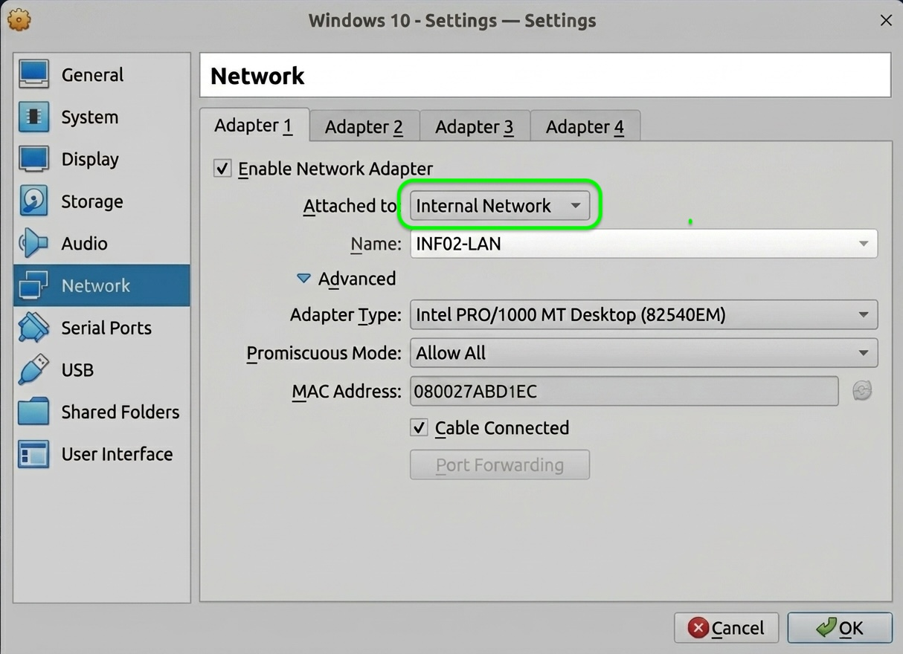

Krok 1: Sprawdzenie sprzętu i BIOS/UEFI
Krytyczne!- Miejsce na dysku: Potrzebujesz minimum 40 GB wolnego miejsca na dysku (najlepiej SSD).
- Pamięć RAM: Twój laptop powinien mieć minimum 8 GB RAM (16 GB to ideał). Będziemy musieli oddać część RAM-u maszynom wirtualnym.
-
Wirtualizacja sprzętowa (VT-x / AMD-V): To najczęstszy powód błędów!
Menedżer zadań (Ctrl+Shift+Esc) ➔ Zakładka: Wydajność ➔ Procesor
Spójrz w prawy dolny róg. Musi tam być napisane: Wirtualizacja: Włączone. Jeśli jest "Wyłączone", musisz wejść do BIOS/UEFI swojego laptopa przy uruchamianiu (zazwyczaj klawisz F2, F10 lub DEL) i włączyć opcję Intel Virtualization Technology lub SVM Mode (dla AMD).
Krok 2: Pobieranie narzędzi i systemów (ISO)
Zajmie ok. 1-2 godziny-
Oracle VirtualBox: Pobierz i zainstaluj najnowszą wersję programu VirtualBox
ze strony
virtualbox.org. To nasz "Hypervisor", w którym zbudujemy sieć. -
Obraz ISO - Windows Server:
Wejdź na stronę Microsoft Evaluation Center. Pobierz 180-dniową, darmową wersję Windows Server 2019 lub 2022 (wersja 64-bit ISO). Plik waży około 5 GB.
-
Obraz ISO - Windows 10:
Z tej samej strony pobierz 90-dniową wersję Windows 10 Enterprise Evaluation (wersja 64-bit ISO). Plik waży około 4-5 GB.
Windows 10 Enterprise Evaluation
Krok 3: Stworzenie "Pustych" Maszyn w VirtualBox
Czas: 20 min-
Maszyna 1: SERWER
-
Nazwa:
Windows Server(Typ: Microsoft Windows, Wersja: Windows 2019/2022 64-bit) - RAM: 2048 MB (2 GB) - absolutne minimum. Jeśli możesz, daj 4096 MB.
- Dysk twardy: VDI, dynamicznie przydzielany, 30 GB.
-
Nazwa:
-
Maszyna 2: UCZEŃ (Stacja robocza)
- Nazwa:
Windows 10(Typ: Microsoft Windows, Wersja: Windows 10 64-bit) - RAM: 2048 MB (2 GB).
- Dysk twardy: VDI, dynamicznie przydzielany, 30 GB.
- Nazwa:
-
Magia Sieci (Kluczowe dla naszych laboratoriów!):
Aby wykonać zadanie z NIC Teaming (Zespoły kart), nasz serwer musi posiadać aż TRZY karty sieciowe.
Ustawienia Maszyny ➔ Sieć🖥️ Konfiguracja Sieci: Windows Server (3 Karty!)
-
Karta 1 (Adapter 1): Zostaw na NAT (wyjście do
Internetu).

-
Karta 2 (Adapter 2): Włącz ją, ustaw na
Sieć wewnętrzna (Internal Network) i nazwij
INF02-LAN.
-
🆕 Karta 3 (Adapter 3) - Wymagana do NIC Teaming!
Włącz tę kartę. Ustaw ją identycznie jak Kartę 2: Sieć wewnętrzna (INF02-LAN).
💻 Konfiguracja Sieci: Windows 10 (1 Karta)
-
Karta 1 (Adapter 1): Zmień na
Sieć wewnętrzna (Internal Network). Nazwij ją
INF02-LAN.
💡 Ustawienie KRYTYCZNE (Promiscuous Mode):
Dla WSZYSTKICH kart ustawionych na "Sieć wewnętrzna" (czyli Karta 2 i 3 na Serwerze oraz Karta 1 na Kliencie), musisz kliknąć Advanced (Zaawansowane) i zmienić Promiscuous Mode (Tryb nasłuchiwania) na Allow All (Pozwól wszystkim).
Bez tego wirtualny switch zablokuje komunikację w zespole NIC Teaming! Sprawdź to dwa razy. -
Karta 1 (Adapter 1): Zostaw na NAT (wyjście do
Internetu).
🕵️♂️ Sekret Inżyniera: Po co aż 3 karty?
Egzamin wymaga stworzenia "Zespołu" (NIC Teaming) z dwóch kart. Jeśli użylibyśmy karty NAT i jednej karty LAN, stracilibyśmy internet na serwerze po ich połączeniu.
Dlatego stosujemy profesjonalne podejście:
- Karta 1 (NAT): Dedykowana tylko do Internetu (aktualizacje).
- Karta 2 + Karta 3 (Internal): Te dwie karty "skleimy" programowo w jedną super-kartę (zespół LAN12) wewnątrz Windows Servera. To na tym zespole oprzemy całą naszą sieć laboratoryjną.
Krok 4: Adresacja IP (Fundament Sieci)
Wymóg przed Labem 1!Teraz zainstaluj systemy z plików ISO. Po instalacji, Twoim pierwszym zadaniem jest ustawienie stałych adresów IP.
ncpa.cpl ➔ Prawy klik na właściwą kartę
➔ Properties (Właściwości)
➔ Internet Protocol Version 4 (TCP/IPv4)
🖥️ Maszyna 1: Windows Server
Na serwerze, po utworzeniu NIC Teamingu (co zrobimy w kolejnych labach), będziesz konfigurować nową, wirtualną kartę zespołu. Na razie upewnij się tylko, że karta NAT ma internet.
💻 Maszyna 2: Windows 10 (Uczeń)
Na kliencie ustawiamy adres na sztywno, wskazując na przyszły adres serwera jako DNS.
- Wybierz: Use the following IP address
- IP address:
192.168.10.30 - Subnet mask:
255.255.255.0 - Default gateway: zostaw puste! (Na razie nie mamy routera w sieci LAN)
- Preferred DNS server:
192.168.10.10(To będzie adres naszego serwera)
Krok 5: Weryfikacja narzędzi (SSH)
Czas: 2 minW nowoczesnym IT nie musisz instalować dodatkowych programów (jak PuTTY), aby zarządzać serwerami Linux. Microsoft wbudował klienta OpenSSH bezpośrednio w system Windows 10!
- Uruchom maszynę Windows 10.
-
Kliknij menu Start, wpisz
cmdi wciśnij Enter (uruchomi się Wiersz poleceń). - W czarnym oknie wpisz komendę:
sshi wciśnij Enter. - Wynik: Jeśli zobaczysz listę dostępnych opcji (np. usage: ssh [-46AaCfGgKkMNnqsTtVvXxYy]...), oznacza to, że Twój system jest gotowy do laboratoriów z integracji! Jeśli system zwróci błąd "nie rozpoznano polecenia", upewnij się, że pobrałeś najnowszą wersję Windows 10 z linku w Kroku 2 i zaktualizowałeś system.